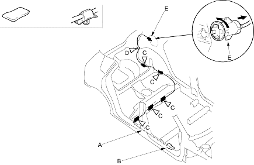

Openers
Fuel Fill Door Opener Cable Replacement
|
20-265 |
|
SRS components are located in this area. Review the SRS component locations (see page 23-24) and the precautions and procedures (see page 23-25) in the SRS section before performing repairs or service.
NOTE:
- Put on gloves to protect your hands.
- care not to scratch the body and related parts.
- Remove these items:
- Front door sill trim, right side (see page 20-206)
- Rear door sill trim, both sides (see page 20-206)
- Trunk side trim panel, left side (see page 20-208)
- Pull the carpet and rear floor carpet back as necessary (see page 20-212).
- Disconnect the fuel fill door opener cable (A) from the opener (B) (see step 3 on page 20-267).
| Fastener Locations |
C  : Cushion tape, 5 : Cushion tape, 5 |
D : Clip, 1 |

- Remove the cushion tape (C) and detach the clip (D) by using a clip remover.
- Remove the fuel fill door latch (E) from the body by turning it 90°.
- Remove the fuel fill door opener cable from the vehicle. Take care not to bend the cable.
- Install the opener cable in the reverse order of removal and replace the cushion tape and replace the clip if it damaged.